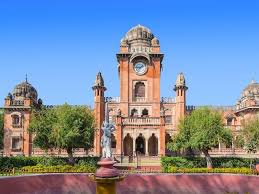

About Gandhi Hall
Gandhi Hall, originally known as King Edward Hall, is a historic building located in the heart of Indore. Built during the British colonial period, this architectural marvel is renowned for its Indo-Gothic style, characterized by its arched entrances, ornamental details, and grandeur. Gandhi Hall serves as a cultural hub and landmark of the city, hosting various events, exhibitions, and concerts throughout the year. The hall's majestic facade and spacious interiors make it a popular venue for social gatherings, public meetings, and cultural programs, contributing to the vibrant cultural landscape of Indore